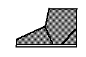
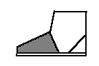

Glossary of Footwear Terminology, U-V
Underpronation
You strike the ground as other runners do, but your foot doesn't complete the motion
needed to absorb shock. Underpronation is associated with a rigid, high-arched foot.
[www.eastbay.com/help/glossary]Unhege-Sceo
See High Shoe.
Although this meaning seems traditional, it is somewhat speculative, since there
is no clear link to the High shoes. Sceo seems to be an older academic form for
scoh. The term is Anglo-Saxon/Old English.
Upper (Overleathers)
- The portion of a shoe or boot which covers the top of the foot. It normally consists of
an outside and a lining with Typical sub-divisions of an upper in, for example, an
ordinary Oxford shoe are: outside - cap, vamp, tongue, quarters, back-strap; lining- vamp
lining, quarte: lining, tongue lining; there may also be side linings. [Thornton/Swann,
1983][Webber, 1989][Vass]

- In some types of construction (e.g. Nailed), the Uppers can even include the
Insole. Everything above the sole, except in the case of single-piece shoes where the
upper then is counted from the imprint line. [Thornton/Swann, 1983]
- All the leather above the sole and covering parts or the all of the foot and leg.
[Goubitz, 2001]
- In modern shoes, the leather/synthetic leather or mesh material above the Midsole that
encloses the foot. [www.eastbay.com/help/glossary]
Upper features
Items that either reinforce or decorate the upper: linen lining, eyelet facing with
underlay, collar, lining leather. [Vass]Upper leather
Leather from the highest-quality layer of the hide, tanned with chrome salts. It is
used to make the upper. Upper leather is normally between one-fifteenth and one-twentieth
of an inch (1.2-1.5 mm) thick. [Vass]
Upper reinforcers
Leather or textile stiffeners for those regions of the upper where the danger of
stretching is greatest. [Vass]Upright (see also Straights)
Shoes that are made to fit either foot, as opposed to those that are made
'right and left'. The term is in use from the 17th century among
shoemakers. [OED 2d Ed.][Saguto] See also Last, Upright or
Straight
V-back soles
The distinctive sole shape for early medieval Scandinavian shoes, where the sole
came up behind the heel of the foot in an inverted V shape. Also found in some
Coptic shoes.
Vamp (Vampethe, Vampet , Vawmpe, Vampey, Avant pied, Forefoot,
Pedana, Pedula) See Forefoot
- The front section of a shoe's upper covering the wearer's toes and part of the instep.
The earliest use of this term, in a shoemaking context, in English was at least by 1654
[OED 2d Ed.]. It likely derives from an older term "vampey" (c15th C), and from
that "Vaumpe"/"Waumpe", from the Anglo-Norman "avanpie" (or
"avant-pied" - "before the foot") and refers to the portion of the
footed hose that covers the foot from the instep and ankle forward. If there was another
term used for the vamp of a shoe before 1654, I do not as yet know what that is -- however
see Forefoot (q.v.)
- If the upper does not have a separate Vamp and Quarters, the front of the upper can be
referred to as the "Vamp portion" rather than the vamp. Do NOT use
"Forepart" as this refers to the sole, not the upper. [Saguto]
- For one piece uppers, use Forepart [Thornton/Swann, 1983]
- The part of the tipper covering the fore part of the foot up to the instep. [Goubitz,
2001]
- The Vamp "is all the piece that covers the top of the foot instep, the top of the
shoe at the tying place toe and toe lining, the lower part of the vamp [Holme, 1688]
- The front of the shoe, consisting of one piece (in the slip-on) or several (toe cap,
vamp insertion). Its shape depends on the shoe style. [Vass]

Vamp Seam
(also Centre seam over vamp)
A real or decorative seam running from the toe to instep of the forefoot.Vamp throat
The leather over the top edge of the forefoot, generally where a shoe�s tongue
or buttons might be attached.
- The central portion of the rear end of the vamp, the section resting on the instep.
- An extension of the vamp reaching up the shin; especially on boots. [Goubitz, 2001]
Vamp Wings
- The sides of the vamp extending backwards either side of the throat to join the quarters
to the side seam(s). [Thornton/Swann, 1983]
- Some vamps, like those of certain mules, extend with 'wings' towards the back, or shoes
with vamp extensions that reach backwards into the quarters. [Goubitz, 2001]
Variant Model
Within a type, shoes may have a diversity of forms. [Goubitz, 2001]
Variant Type
Within a type, the shape and placement of the fastening may differ from model to model.
[Goubitz, 2001]
Vampet
(See Vamp)Vampethe
(See Vamp)
Vampey
(See Vamp)Vawmpe
(See Vamp)
Veldtschoen (stitch-down construction)
A Dutch term for a Stitchdown shoe, which has been extended by some to refer to all shoes
made of Stitchdown construction (q.v.). Veldtschoen means field shoe. The name is derived
from the Boer farmers in South Africa in the nineteenth century. In a "Welted
Veldtschoen", the lining is welted (q.v.) to the insole and then the outside is
flanged outwards and stitched to the welt and sole. Although the method is traditionally
South African it was used for repairs on early shoes where upper patches were required,
and also to finish off the attachment of the extreme points of the long 15th century
poulaines. Also an amateur or cheap construction used 17-18th centuries, especially for
children's shoes (see Stitchdown)[Thornton/Swann, 1983][Goubitz, 2001]
Return to Contents or [Next]
Footwear of the Middle Ages - Glossary of Footwear Terminology U-V,
Copyright � 1999, 2000, 2001, 2005 I. Marc Carlson.
This page is given for the free exchange of information, provided the author's name is
included in all future revisions, and no money change hands, other than as expressed in
the Copyright Page.